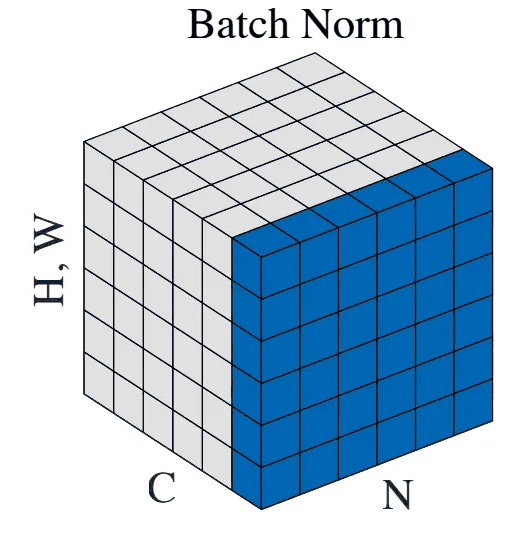
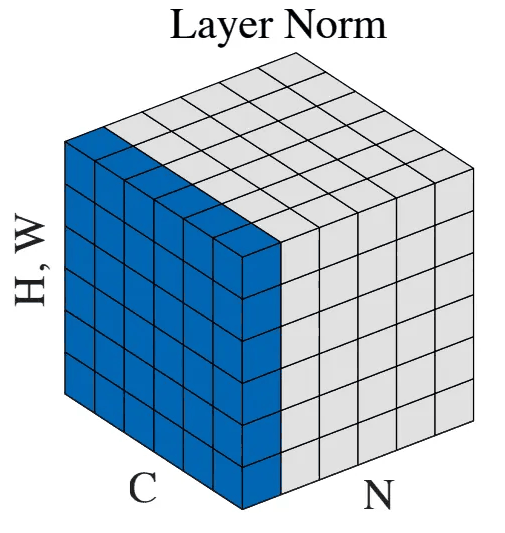
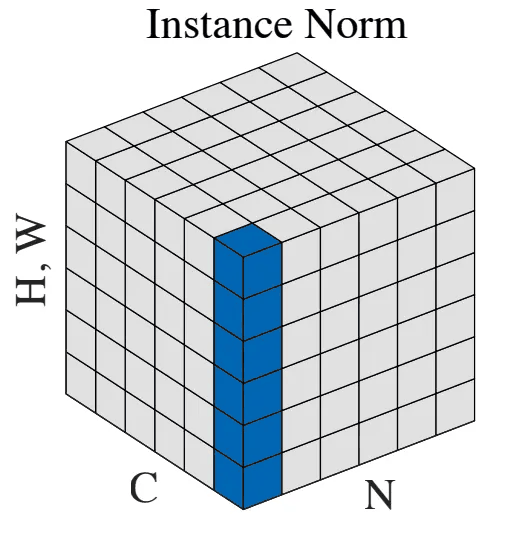
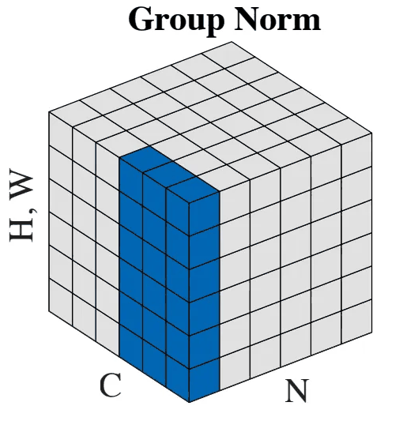
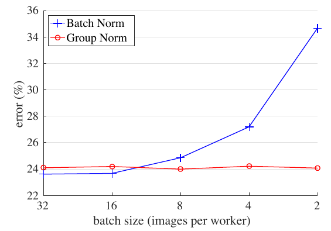
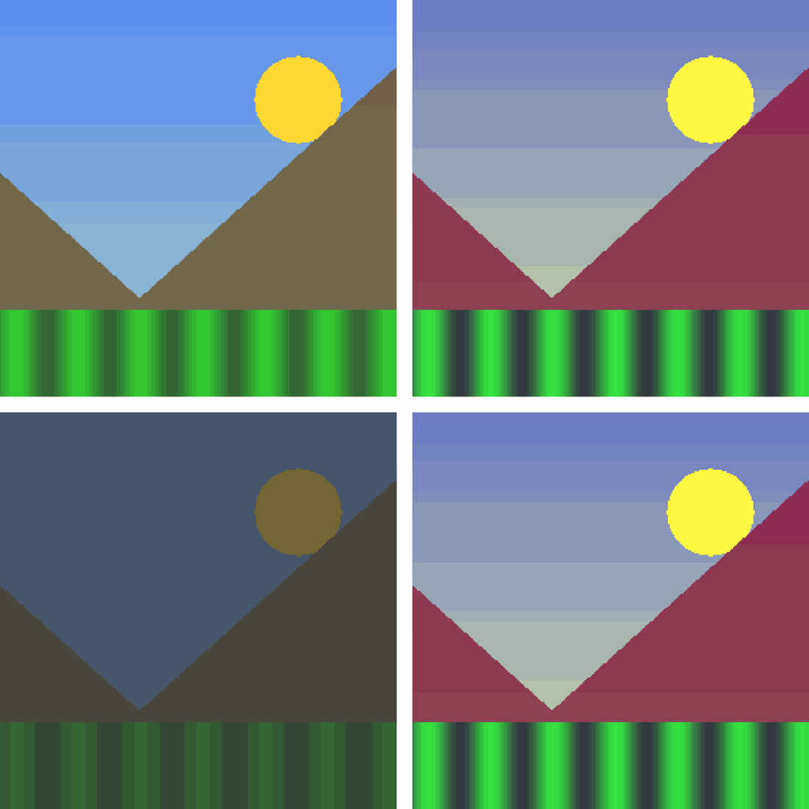

Distinguir Batch, Layer, Instance y Group Norm por los ejes sobre los que calculan la media.
Calcular a mano cuántas medias saca cada una de un tensor pequeño.
Explicar por qué Batch Norm se comporta distinto en entrenamiento y en inferencia.
Elegir la normalización adecuada para un problema real y defender tu elección.
El problema
Sin normalizar, la señal se apaga capa tras capa
Red de 8 capas lineales de 256 neuronas con ReLU, inicialización por omisión de PyTorch. Entrada: 512 vectores aleatorios. En la capa 8, la desviación pasa de 1 a 0.023 sin normalizar; con Layer Norm se queda en 1.
Después de normalizar, el grupo de números tiene media 0 y desviación 1. \( \epsilon \) evita dividir entre cero.
γ y β se aprenden: la red puede volver a escalar y mover los valores si le conviene.
Las cuatro técnicas usan esta misma fórmula. Solo cambia qué números entran al cálculo de μ y σ.
La idea común
Cuatro maneras de agrupar el mismo tensor




N es el batch, C los canales y H, W las posiciones de la imagen. Los cuadros azules comparten la misma μ y la misma σ. Figura de Wu y He (2018).
Ejemplo resuelto
Mismo tensor, cuatro grupos distintos
Batch Norm
Ioffe y Szegedy, 2015
Batch Norm
Cada canal se compara con el resto del batch
Promedia sobre N, H y W: una μ y una σ por canal[1].
Permite tasas de aprendizaje más altas: Inception con BN llegó a la precisión de Inception con 14 veces menos pasos[1].
μ y σ cambian con cada batch. Ese ruido actúa como regularización[1, 4].
ResNet la usa después de cada convolución[6].
La explicación original fue el internal covariate shift. Hoy se discute: Santurkar et al. (2018) muestran que BN ayuda porque suaviza la superficie de la pérdida[5].
Batch Norm
Mismo dato, distinta salida: train contra eval
import torch, torch.nn as nn
bn = nn.BatchNorm2d(4)
x = torch.arange(32.).reshape(2, 4, 2, 2)
bn.train(); y = bn(x) # usa μ y σ de este batch
print(bn.running_mean) # [0.95, 1.35, 1.75, 2.15]
bn.eval(); z = bn(x) # usa μ y σ guardadas
print(y[0, 0, 0, 0]) # -1.18
print(z[0, 0, 0, 0]) # -0.33
En train() usa μ y σ del batch y actualiza sus estadísticas acumuladas[17].
Error común: evaluar sin model.eval(). La predicción de una imagen depende de qué otras imágenes vienen en el batch.
Batch Norm
Con batches chicos, el error de BN se dispara

Eje vertical: error de clasificación de ResNet-50 en ImageNet. Figura de Wu y He (2018).
Con 32 imágenes por GPU, BN falla en 23.6 % de los casos.
Con 2, μ y σ cambian mucho de un batch a otro: el error sube a 34.7 %.
Group Norm no mira al batch: se queda cerca de 24 %.
Batch Norm · Cuándo sí y cuándo no
BN brilla con batches grandes de imágenes
Úsala cuando
Entrenas una CNN de clasificación con 16 o más imágenes por GPU[4].
Quieres entrenar rápido con tasas de aprendizaje altas[1].
En inferencia se fusiona con los pesos de la convolución anterior[16].
Evítala cuando
El batch por GPU es chico (1 a 8)[4].
Usas una RNN: las estadísticas cambian con el largo de la secuencia[2].
Los datos reales son muy distintos a los de entrenamiento: las medias guardadas ya no aplican[15].
Punto de control
Tu CNN con Batch Norm ya está entrenada. En producción clasificas imágenes en batches de 8, pero olvidaste llamar a model.eval(). ¿Qué pasa?
C.Correcta. En modo train, BN normaliza con la μ y la σ del batch actual, no con las guardadas. Además sigue modificando las estadísticas acumuladas.
A.Incorrecta. Los pesos son iguales, pero μ y σ no: salen del batch que llega.B.Incorrecta. BN acepta cualquier batch con más de un valor por canal; el problema es silencioso.
Layer Norm
Ba, Kiros y Hinton, 2016
Layer Norm
Cada ejemplo se normaliza por su cuenta
Promedia sobre todas las características de un ejemplo: no mira al resto del batch[2].
Hace exactamente lo mismo en entrenamiento y en inferencia. No guarda estadísticas.
En un Transformer, cada token es un vector de d números. nn.LayerNorm(d) normaliza cada token por separado[17].
tokens = torch.randn(4, 10, 512) # (batch, tokens, d)
out = nn.LayerNorm(512)(tokens) # 40 pares (μ, σ)
out[0, 0].mean(), out[0, 0].std() # ≈ 0 y ≈ 1 en cada token
Layer Norm · Cuándo sí y cuándo no
LN es la normalización de las secuencias
Úsala cuando
Entrenas un Transformer: el original, GPT-2 y ViT usan LN[7, 8, 9].
Usas una RNN: se aplica en cada paso de tiempo[2].
El batch es chico, incluso de 1[2].
Evítala cuando
Tienes una CNN de visión: en ResNet-50, LN 25.3 % y BN 23.6 % de error[4].
Los canales son muy distintos: LN supone que aportan parecido[4].
LLaMA usa RMSNorm: una variante de LN que no resta la media[10, 11].
Punto de control
Un Transformer recibe un tensor de forma (B, T, d) = (4, 10, 512). ¿Cuántos pares (μ, σ) calcula nn.LayerNorm(512)?
A.Correcta. LN promedia los 512 números de cada token, así que hay 4 × 10 = 40 grupos.
B.Incorrecta. Eso sería normalizar cada característica a lo largo del batch: es la idea de Batch Norm.C.Incorrecta. Sería LN sobre (T, d) juntos. nn.LayerNorm(512) solo toma el último eje.
Instance Norm
Ulyanov, Vedaldi y Lempitsky, 2016
Instance Norm
IN borra el contraste de cada imagen

Izquierda: original y versión oscura. Derecha: después de IN.
Promedia sobre H y W: una μ y una σ por imagen y por canal.
Las dos salidas son iguales: IN quita el brillo y el contraste de cada imagen[3].
En transferencia de estilo, eso es justo lo que quieres: el contraste lo pone el estilo, no la foto[3].
Instance Norm · Cuándo sí y cuándo no
IN sirve para generar y segmentar, no para clasificar
Úsala cuando
Haces transferencia de estilo[3].
Traduces imágenes con GAN: CycleGAN usa IN[12].
Segmentas imágenes médicas 3D con batch de 2: nnU-Net usa IN[13].
Evítala cuando
Clasificas: en ResNet-50, IN tiene 28.4 % de error y BN 23.6 %[4].
El brillo o el contraste importan para la tarea: IN los borra[3].
Punto de control
Un tensor tiene forma (N, C, H, W). ¿Qué normalización calcula sus medias con x.mean(dim=(2, 3))?
B.Correcta. Solo se promedian H y W, así que quedan N × C medias: una por cada imagen y cada canal.
A.Incorrecta. Batch Norm también promedia el eje 0: dim=(0, 2, 3).C.Incorrecta. Layer Norm también promedia los canales: dim=(1, 2, 3).
Group Norm
Wu y He, 2018
Group Norm
GN junta canales en grupos: entre LN e IN
Divide los C canales en G grupos y promedia cada grupo en H y W. Por omisión, G = 32[4].
Con G = 1 es Layer Norm. Con G = C es Instance Norm.
No mira al batch: su error en ResNet-50 se queda en 24.0–24.2 % de 32 a 2 imágenes por GPU[4].
ResNet-50, 32 imágenes por GPU[4]
Error en ImageNet
G = 1 (Layer Norm)
25.3 %
G = 32
24.1 %
1 canal por grupo (Instance Norm)
28.4 %
Group Norm · Cuándo sí y cuándo no
GN rescata a la visión con batches chicos
Úsala cuando
Haces detección, segmentación o video con 1 o 2 imágenes por GPU[4].
Haces ajuste fino de un detector[4].
Construyes un modelo de difusión: la U-Net de DDPM usa GN[14].
Evítala cuando
Tienes batches grandes: BN gana por poco (23.6 % y 24.1 %)[4].
No quieres otro hiperparámetro: G debe dividir a C[17].
Punto de control
Una capa tiene C = 64 canales. Usas nn.GroupNorm(num_groups=64, num_channels=64). ¿A qué normalización equivale?
A.Correcta. 64 grupos para 64 canales deja un canal por grupo: cada media sale solo de H y W.
B.Incorrecta. Layer Norm es el otro extremo: G = 1.C.Incorrecta. Hay una media por canal, pero de una sola imagen; BN promedia también el batch.
Resumen
Lo que cambia es sobre qué ejes se promedia
Método
Promedia sobre
¿Depende del batch?
Uso típico
Batch Norm
N, H, W
Sí, y distinto en train y eval
CNN de clasificación
Layer Norm
C, H, W (o d)
No
Transformers y RNN
Instance Norm
H, W
No
Estilo, GAN, segmentación 3D
Group Norm
C/G canales, H, W
No
Detección, segmentación, difusión
Resumen
Cuatro preguntas para elegir
Es una guía, no una regla: en segmentación médica 3D, nnU-Net usa IN[13]. Umbral de 16 imágenes[4].
Actividad · 5 min
Elige la normalización y defiéndela
Clasificar productos con ResNet-50, 64 imágenes por GPU
Segmentar tumores en 3D, 2 volúmenes por GPU
Un chatbot tipo GPT
Pintar fotos al estilo de Van Gogh
Reconocer voz con una LSTM y audios de distinto largo
Qué hacer: elijan BN, LN, IN o GN para cada caso, con una razón. Luego un equipo defiende cada caso en 1 minuto.
Modalidad: en equipos de 3
1 BN · 2 GN o IN · 3 LN · 4 IN · 5 LN
Actividad · 15 min
Programa las cuatro normalizaciones a mano
Abre la libreta y completa los cuatro huecos con mean y var.
Cada celda de prueba compara tu resultado con la capa de PyTorch.
Mide qué tan lejos queda la μ del batch de la μ real con batches de 32 y de 2.
Las cuatro restan la media y dividen entre la desviación; solo cambian los ejes del promedio.
Batch Norm es la única que depende del batch: brilla con batches grandes y exige model.eval().
Layer Norm normaliza cada ejemplo por su cuenta: es la de Transformers y RNN.
Instance Norm borra el estilo de la imagen; Group Norm es el punto medio para batches chicos.
Tipos de normalización
Referencias (1 de 2)
Paper [1] Ioffe, S. y Szegedy, C. Batch Normalization: Accelerating Deep Network Training by Reducing Internal Covariate Shift. ICML, 2015. arXiv:1502.03167.
Paper [2] Ba, J. L., Kiros, J. R. y Hinton, G. E. Layer Normalization. 2016. arXiv:1607.06450.
Paper [3] Ulyanov, D., Vedaldi, A. y Lempitsky, V. Instance Normalization: The Missing Ingredient for Fast Stylization. 2016. arXiv:1607.08022.
Paper [4] Wu, Y. y He, K. Group Normalization. ECCV, 2018. arXiv:1803.08494. Figuras 1 y 2, tablas 1–3.
Paper [5] Santurkar, S., Tsipras, D., Ilyas, A. y Madry, A. How Does Batch Normalization Help Optimization? NeurIPS, 2018. arXiv:1805.11604.
Paper [6] He, K., Zhang, X., Ren, S. y Sun, J. Deep Residual Learning for Image Recognition. CVPR, 2016. arXiv:1512.03385.
Paper [7] Vaswani, A. et al. Attention Is All You Need. NeurIPS, 2017. arXiv:1706.03762.
Paper [8] Radford, A. et al. Language Models are Unsupervised Multitask Learners. OpenAI, 2019. PDF.
Tipos de normalización
Referencias (2 de 2)
Paper [9] Dosovitskiy, A. et al. An Image is Worth 16x16 Words: Transformers for Image Recognition at Scale. ICLR, 2021. arXiv:2010.11929.
Paper [10] Touvron, H. et al. LLaMA: Open and Efficient Foundation Language Models. 2023. arXiv:2302.13971.
Paper [11] Zhang, B. y Sennrich, R. Root Mean Square Layer Normalization. NeurIPS, 2019. arXiv:1910.07467.
Paper [12] Zhu, J.-Y. et al. Unpaired Image-to-Image Translation using Cycle-Consistent Adversarial Networks. ICCV, 2017. arXiv:1703.10593.
Paper [13] Isensee, F. et al. nnU-Net: Self-adapting Framework for U-Net-Based Medical Image Segmentation. 2018. arXiv:1809.10486.
Paper [14] Ho, J., Jain, A. y Abbeel, P. Denoising Diffusion Probabilistic Models. NeurIPS, 2020. arXiv:2006.11239.
Paper [15] Li, Y. et al. Revisiting Batch Normalization For Practical Domain Adaptation. 2016. arXiv:1603.04779.
Paper [16] Jacob, B. et al. Quantization and Training of Neural Networks for Efficient Integer-Arithmetic-Only Inference. CVPR, 2018. arXiv:1712.05877.